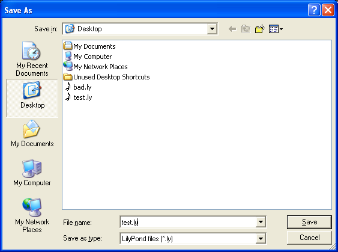

Windows
Note: LilyPond is a text-based music engraver; it is more similar to a programming language than a graphical score editing program. Before downloading LilyPond, please read about our Text input.
Packages
Download
-
 Windows: LilyPond 2.18.2-1
For Windows 2000, XP, Vista, Windows 7 and 8.
Windows: LilyPond 2.18.2-1
For Windows 2000, XP, Vista, Windows 7 and 8.
Install
- Locate the downloaded file and double-click on it to start the installer. Follow the instructions given to you by the installer; we recommend that you leave all the install options checked and use the default installation location. Click the ‘Finish’ button when the installer has completed. LilyPond is now installed.
Uninstall
To uninstall LilyPond either:
- Locate the LilyPond folder from the ‘Start’ menu and click on the ‘Uninstall’ icon. Click the ‘Finish’ button when the uninstaller has completed.
- Or from within the Control Panel, locate and select LilyPond and then choose the option to uninstall/remove the software. Click the ‘Finish’ button when the uninstaller has completed.
Running on the command-line
Note: If you are happy with the GUI instructions below, then please ignore these instructions.
Windows on the command line
The most convenient way to run LilyPond is by adding the folder which contains LilyPond executable files to the environmental variable “Path”.
- Open your “System” on the Control Panel, select Advanced tab and click Environmental Variables button.
-
Select the Variable “Path” from Environmental variables list
and click the Edit button.
You will be presented a window titled “Edit System Variable”;
append to “Variable value” the name of the folder
which contains LilyPond executable files like this:
[pre-set paths];DIR\LilyPond\usr\bin
Note: DIR will generally be
C:\Program Files (x86)for 64 bit orC:\Program Filesfor 32 bit systems.and click “OK” button to close the window.
Invoking individual executable files
LilyPond executable files – such as lilypond, lilypond-book, convert-ly, and so on – can be run from the command-line by invoking them:
lilypond test.ly
Compiling a file
Note: These instructions assume that you are using the built-in LilyPad editor. If you are using any of the programs described in Easier editing, consult the documentation for those programs should you have any problems.
Step 1. Create your ‘.ly’ file
Double-click the LilyPond icon on your desktop and an example file will open.

From the menus that appear along the top of the example file,
select File > Save as. Do not use the File > Save
for the example file as this will not work until you have given it a
valid LilyPond file name.

Choose a name for your file, for example ‘test.ly’.
Step 2. Compile
To turn your LilyPond file into a music score, you need to compile it. This can be done a number of ways – using drag and drop, with right-click, double-clicking or using the command line (a DOS box). We’ll look at the first three to start with.
1. Drag-and-drop the file directly onto the LilyPond icon on the desktop.

Not much will seem to happen, but after a short while, you should see two new files on your desktop – ‘test.log’ and ‘test.pdf’.
2. Right-click on the file and from the pop-up context menu and
choose Generate PDF.

3. Or simply double-click the ‘test.ly’.
Step 3. View output
‘test.pdf’ contains the engraved ‘test.ly’ file. Double-click it and it should open in your PDF viewer:

Other commands
To create a new file, begin by selecting File > New from
within any previously created file or File > Open to open and
edit any files you have saved before. You can also edit a file by
right-clicking it and selecting Edit source.

You must save any edits you make before you try to compile your file. If the PDF file is not created or the output is not what you expected, check the log file that will have been created during the compilation attempt for any errors.

This log file is overwritten each time you compile your LilyPond file.
If you are viewing your file in a PDF viewer, then you must close the PDF if you wish to try a new compilation as it may fail to create the new PDF while it is still being viewed.

Legalese
All logos and product images are copyright and trademark acknowledged.
The “four colored rectangles image” is not a registered trademark. It was created by Rohitbd and placed under the GNU Free Documentation License version 1.2. We found the image on this Wikimedia Commons page.
Other languages: català, česky, deutsch, español, français, magyar, italiano, 日本語, nederlands, 中文.
About automatic language selection.